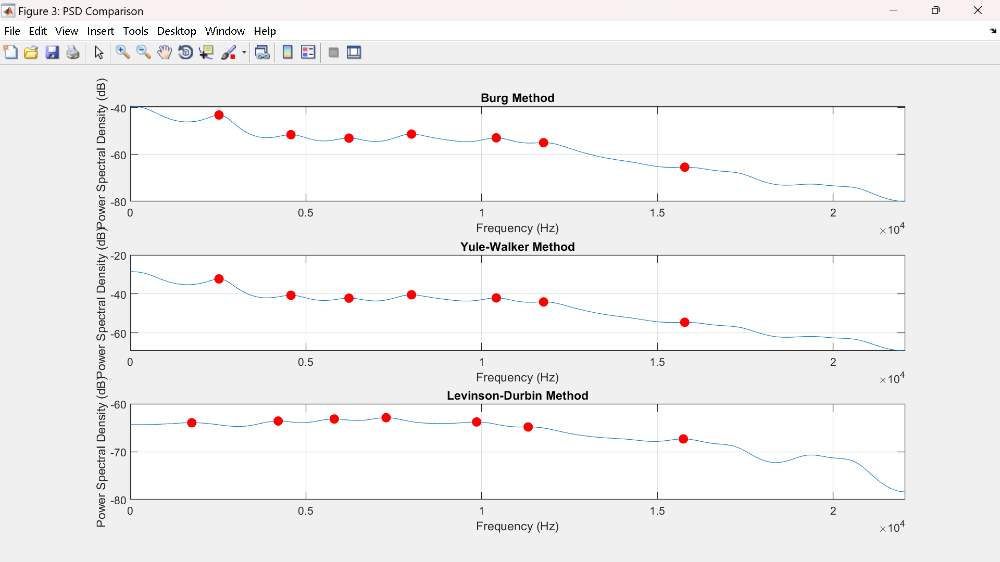
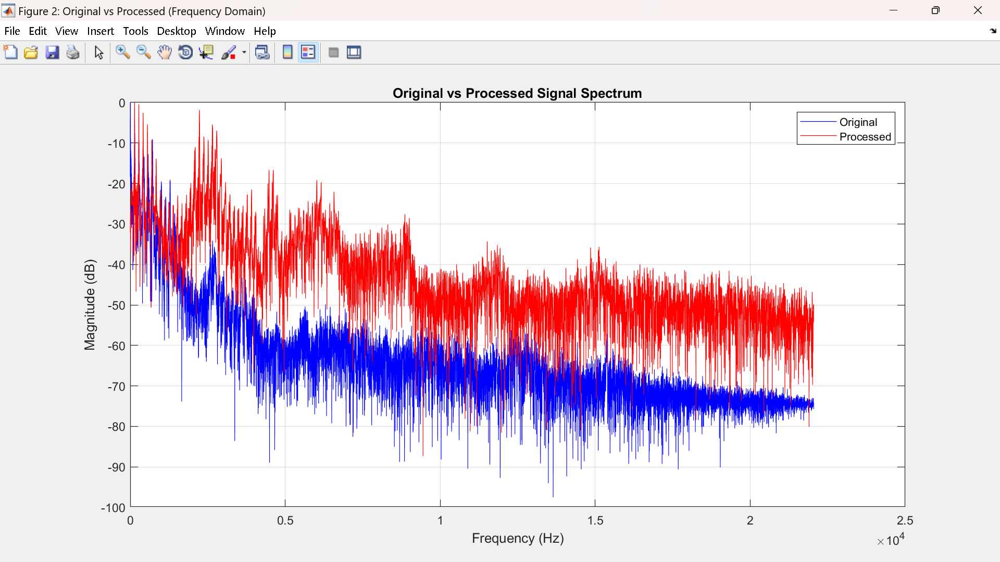
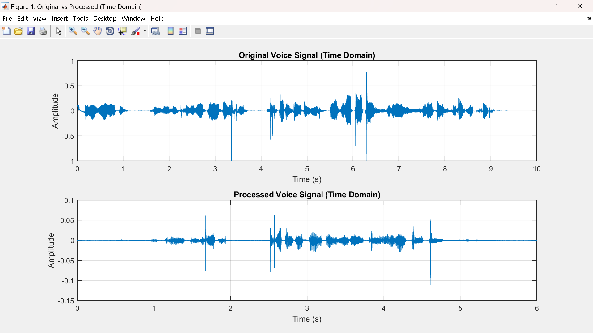

DIGITAL SIGNAL PROCESSING / MATLAB
AR Frequency Estimation of Voice Signal
A MATLAB-based digital signal processing project applying autoregressive modeling techniques to a recorded voice signal and estimating its dominant frequency components.
AREA
Digital Signal Processing
PLATFORM
MATLAB
INPUT
Recorded Voice Signal
OUTPUT
Seven Dominant Frequencies
01 / OVERVIEW
Project Overview
A MATLAB DSP project that models a recorded voice signal using autoregressive techniques and estimates dominant frequency components. Burg, Yule-Walker and Levinson-Durbin approaches were implemented and compared.
02 / PROJECT MEDIA
MATLAB Results & Report



03 / METHODS
AR Estimation Methods
Burg Method
Estimates AR coefficients using forward and backward prediction errors.
Yule-Walker
Estimates AR parameters from signal autocorrelation.
Levinson-Durbin
Efficient recursion used in AR coefficient analysis.
04 / PROCESS
Signal Processing Workflow
Import the recorded voice signal into MATLAB.
Prepare the signal for AR modeling.
Estimate coefficients using Burg.
Estimate coefficients using Yule-Walker.
Apply Levinson-Durbin recursion.
Determine dominant spectral peaks.
Extract the first seven dominant frequency estimates.
Compare estimation behavior and model performance.
05 / OUTCOMES
Project Outcomes
- Implemented three AR approaches in MATLAB.
- Modeled a human voice signal with AR coefficients.
- Estimated the first seven dominant frequencies.
- Compared method behavior and model performance.
- Strengthened understanding of parametric spectral analysis.